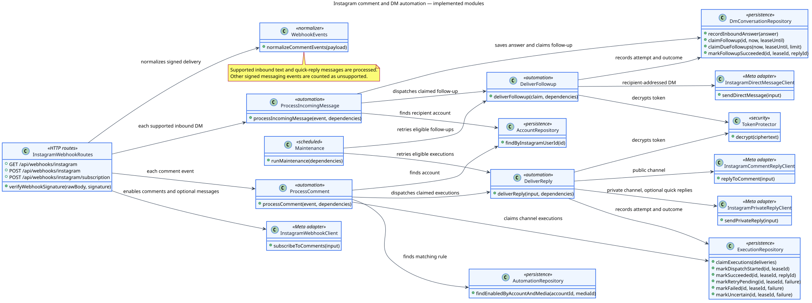

Instagram comment and DM automation — UML
Modules involved in comment replies, private messages, inbound answers, and follow-ups.
Open call sequence
·
Open SVG directly
·
View editable PlantUML source
